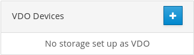
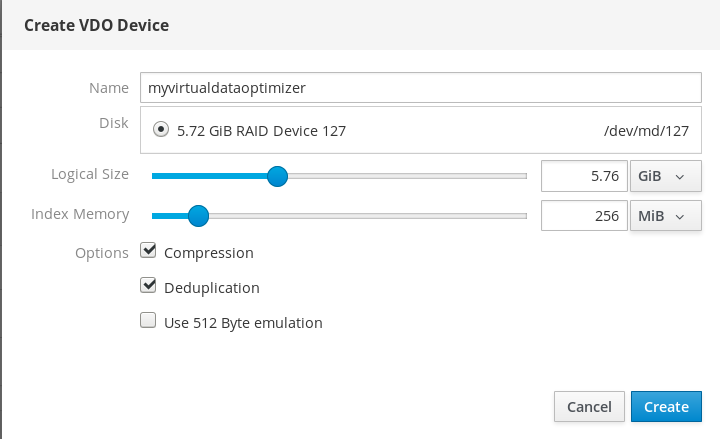
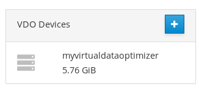
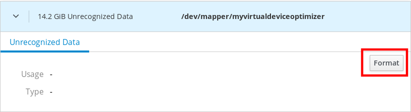
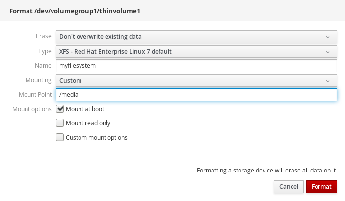
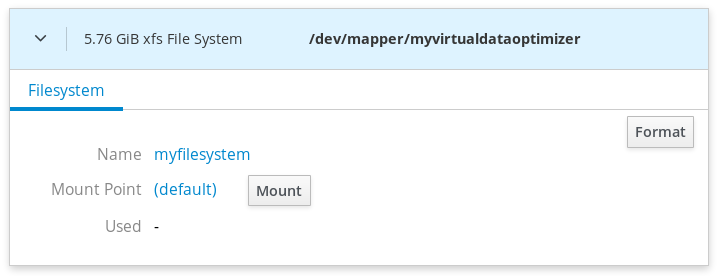
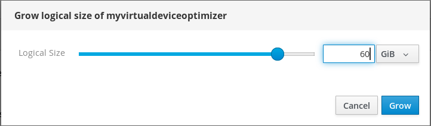
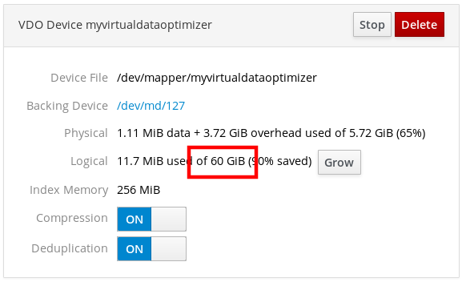

Deduplicating and compressing storage
Using VDO to optimize storage capacity in RHEL 8
Abstract
Providing feedback on Red Hat documentation
We appreciate your input on our documentation. Please let us know how we could make it better. To do so:
For simple comments on specific passages:
- Make sure you are viewing the documentation in the Multi-page HTML format. In addition, ensure you see the Feedback button in the upper right corner of the document.
- Use your mouse cursor to highlight the part of text that you want to comment on.
- Click the Add Feedback pop-up that appears below the highlighted text.
- Follow the displayed instructions.
For submitting more complex feedback, create a Bugzilla ticket:
- Go to the Bugzilla website.
- As the Component, use Documentation.
- Fill in the Description field with your suggestion for improvement. Include a link to the relevant part(s) of documentation.
- Click Submit Bug.
Chapter 1. Deploying VDO
As a system administrator, you can use VDO to create deduplicated and compressed storage pools.
1.1. Introduction to VDO
Virtual Data Optimizer (VDO) provides inline data reduction for Linux in the form of deduplication, compression, and thin provisioning. When you set up a VDO volume, you specify a block device on which to construct your VDO volume and the amount of logical storage you plan to present.
- When hosting active VMs or containers, Red Hat recommends provisioning storage at a 10:1 logical to physical ratio: that is, if you are utilizing 1 TB of physical storage, you would present it as 10 TB of logical storage.
- For object storage, such as the type provided by Ceph, Red Hat recommends using a 3:1 logical to physical ratio: that is, 1 TB of physical storage would present as 3 TB logical storage.
In either case, you can simply put a file system on top of the logical device presented by VDO and then use it directly or as part of a distributed cloud storage architecture.
Because VDO is thinly provisioned, the file system and applications only see the logical space in use and are not aware of the actual physical space available. Scripting should be used to monitor the actual available space and generate an alert if use exceeds a threshold: for example, when the VDO volume is 80% full. See Section 2.1, “Managing free space on VDO volumes” for details.
1.2. VDO deployment scenarios
You can deploy VDO in a variety of ways to provide deduplicated storage for:
- both block and file access
- both local and remote storage
Because VDO exposes its deduplicated storage as a standard Linux block device, you can use it with standard file systems, iSCSI and FC target drivers, or as unified storage.
VDO deployment with Ceph Storage is currently not supported.
KVM
You can deploy VDO on a KVM server configured with Direct Attached Storage.
File systems
You can create file systems on top of VDO and expose them to NFS or CIFS users with the NFS server or Samba.
iSCSI target
You can export the entirety of the VDO storage target as an iSCSI target to remote iSCSI initiators.
LVM
On more feature-rich systems, you can use LVM to provide multiple logical unit numbers (LUNs) that are all backed by the same deduplicated storage pool.
In the following diagram, the VDO target is registered as a physical volume so that it can be managed by LVM. Multiple logical volumes (LV1 to LV4) are created out of the deduplicated storage pool. In this way, VDO can support multiprotocol unified block or file access to the underlying deduplicated storage pool.
Deduplicated unified storage design enables for multiple file systems to collectively use the same deduplication domain through the LVM tools. Also, file systems can take advantage of LVM snapshot, copy-on-write, and shrink or grow features, all on top of VDO.
Encryption
Device Mapper (DM) mechanisms such as DM Crypt are compatible with VDO. Encrypting VDO volumes helps ensure data security, and any file systems above VDO are still deduplicated.
Applying the encryption layer above VDO results in little if any data deduplication. Encryption makes duplicate blocks different before VDO can deduplicate them.
Always place the encryption layer below VDO.
1.3. VDO requirements
VDO has certain requirements on its placement and your system resources.
1.3.1. Placement of VDO in the storage stack
You should place certain storage layers under VDO and others above VDO.
A VDO volume is a thinly provisioned block device. To prevent running out of physical space, place the volume on top of storage that you can expand at a later time. Examples of such expandable storage are LVM volumes or MD RAID arrays.
You can place thick-provisioned layers on top of VDO, but you cannot rely on the guarantees of thick provisioning in that case. Because the VDO layer is thin-provisioned, the effects of thin provisioning apply to all layers above it. If you do not monitor the VDO device, you might run out of physical space on thick-provisioned volumes above VDO.
Red Hat recommends the following configurations:
- Place only under VDO
- DM Multipath
- DM Crypt
- Software RAID (LVM or MD RAID)
- Place only above VDO
- LVM cache
- LVM snapshots
- LVM thin provisioning
The following configurations are not supported:
- VDO on top of VDO volumes: storage → VDO → LVM → VDO
- VDO on top of LVM snapshots
- VDO on top of LVM cache
- VDO on top of a loopback device
- VDO on top of LVM thin provisioning
- Encrypted volumes on top of VDO: storage → VDO → DM-Crypt
- Partitions on a VDO volume
- RAID (LVM RAID, MD RAID, or any other type) on top of a VDO volume
Additional resources
- For more information on stacking VDO with LVM, see the Stacking LVM volumes article.
1.3.2. VDO memory requirements
Each VDO volume has two distinct memory requirements:
The VDO module
VDO requires 370 MB of RAM plus an additional 268 MB per each 1 TB of physical storage managed by the volume.
The Universal Deduplication Service (UDS) index
UDS requires a minimum of 250 MB of RAM, which is also the default amount that deduplication uses.
The memory required for the UDS index is determined by the index type and the required size of the deduplication window:
| Index type | Deduplication window | Note |
|---|---|---|
| Dense | 1 TB per 1 GB of RAM | A 1 GB dense index is generally sufficient for up to 4 TB of physical storage. |
| Sparse | 10 TB per 1 GB of RAM | A 1 GB sparse index is generally sufficient for up to 40 TB of physical storage. |
The UDS Sparse Indexing feature is the recommended mode for VDO. It relies on the temporal locality of data and attempts to retain only the most relevant index entries in memory. With the sparse index, UDS can maintain a deduplication window that is ten times larger than with dense, while using the same amount of memory.
Although the sparse index provides the greatest coverage, the dense index provides more deduplication advice. For most workloads, given the same amount of memory, the difference in deduplication rates between dense and sparse indexes is negligible.
Additional resources
- For concrete examples of UDS index memory requirements, see Section 1.3.4, “Examples of VDO requirements by physical volume size”.
1.3.3. VDO storage space requirements
You can configure a VDO volume to use up to 256 TB of physical storage. Only a certain part of the physical storage is usable to store data. This section provides the calculations to determine the usable size of a VDO-managed volume.
VDO requires storage for two types of VDO metadata and for the UDS index:
- The first type of VDO metadata uses approximately 1 MB for each 4 GB of physical storage plus an additional 1 MB per slab.
- The second type of VDO metadata consumes approximately 1.25 MB for each 1 GB of logical storage, rounded up to the nearest slab.
- The amount of storage required for the UDS index depends on the type of index and the amount of RAM allocated to the index. For each 1 GB of RAM, a dense UDS index uses 17 GB of storage, and a sparse UDS index will use 170 GB of storage.
Additional resources
- For concrete examples of VDO storage requirements, see Section 1.3.4, “Examples of VDO requirements by physical volume size”.
1.3.4. Examples of VDO requirements by physical volume size
The following tables provide approximate system requirements of VDO based on the size of the underlying physical volume. Each table lists requirements appropriate to the intended deployment, such as primary storage or backup storage.
The exact numbers depend on your configuration of the VDO volume.
Primary storage deployment
In the primary storage case, the UDS index is between 0.01% to 25% the size of the physical volume.
Table 1.1. Storage and memory requirements for primary storage
| Physical volume size | RAM usage | Disk usage | Index type |
|---|---|---|---|
| 10GB–1TB | 250MB | 2.5 GB | Dense |
| 2–10TB | 1GB | 10GB | Dense |
| 250MB | 22GB | Sparse | |
| 11–50TB | 2GB | 170GB | Sparse |
| 51–100TB | 3GB | 255GB | Sparse |
| 101–256TB | 12GB | 1020GB | Sparse |
Backup storage deployment
In the backup storage case, the UDS index covers the size of the backup set but is not bigger than the physical volume. If you expect the backup set or the physical size to grow in the future, factor this into the index size.
Table 1.2. Storage and memory requirements for backup storage
| Physical volume size | RAM usage | Disk usage | Index type |
|---|---|---|---|
| 10GB–1TB | 250MB | 2.5 GB | Dense |
| 2–10TB | 2GB | 170GB | Sparse |
| 11–50TB | 10GB | 850GB | Sparse |
| 51–100TB | 20GB | 1700GB | Sparse |
| 101–256TB | 26GB | 3400GB | Sparse |
1.4. Installing VDO
This procedure installs software necessary to create, mount, and manage VDO volumes.
Procedure
Install the
vdoandkmod-kvdopackages:# yum install vdo kmod-kvdo
1.5. Creating a VDO volume
This procedure creates a VDO volume on a block device.
Prerequisites
- Install the VDO software. See Section 1.4, “Installing VDO”.
- Use expandable storage as the backing block device. For more information, see Section 1.3.1, “Placement of VDO in the storage stack”.
Procedure
In all the following steps, replace vdo-name with the identifier you want to use for your VDO volume; for example, vdo1. You must use a different name and device for each instance of VDO on the system.
Find a persistent name for the block device where you want to create the VDO volume. For more information on persistent names, see Chapter 5, Overview of persistent naming attributes.
If you use a non-persistent device name, then VDO might fail to start properly in the future if the device name changes.
Create the VDO volume:
# vdo create \ --name=vdo-name \ --device=block-device \ --vdoLogicalSize=logical-size-
Replace block-device with the persistent name of the block device where you want to create the VDO volume. For example,
/dev/disk/by-id/scsi-3600508b1001c264ad2af21e903ad031f. Replace logical-size with the amount of logical storage that the VDO volume should present:
-
For active VMs or container storage, use logical size that is ten times the physical size of your block device. For example, if your block device is 1TB in size, use
10There. -
For object storage, use logical size that is three times the physical size of your block device. For example, if your block device is 1TB in size, use
3There.
-
For active VMs or container storage, use logical size that is ten times the physical size of your block device. For example, if your block device is 1TB in size, use
If the physical block device is larger than 16TiB, add the
--vdoSlabSize=32Goption to increase the slab size on the volume to 32GiB.Using the default slab size of 2GiB on block devices larger than 16TiB results in the
vdo createcommand failing with the following error:vdo: ERROR - vdoformat: formatVDO failed on '/dev/device': VDO Status: Exceeds maximum number of slabs supported
Example 1.1. Creating VDO for container storage
For example, to create a VDO volume for container storage on a 1TB block device, you might use:
# vdo create \ --name=vdo1 \ --device=/dev/disk/by-id/scsi-3600508b1001c264ad2af21e903ad031f \ --vdoLogicalSize=10TImportantIf a failure occurs when creating the VDO volume, remove the volume to clean up. See Section 2.10.2, “Removing an unsuccessfully created VDO volume” for details.
-
Replace block-device with the persistent name of the block device where you want to create the VDO volume. For example,
Create a file system on top of the VDO volume:
For the XFS file system:
# mkfs.xfs -K /dev/mapper/vdo-nameFor the ext4 file system:
# mkfs.ext4 -E nodiscard /dev/mapper/vdo-name
Use the following command to wait for the system to register the new device node:
# udevadm settle
Next steps
- Mount the file system. See Section 1.6, “Mounting a VDO volume” for details.
-
Enable the
discardfeature for the file system on your VDO device. See Section 1.7, “Enabling periodic block discard” for details.
Additional resources
-
The
vdo(8)man page
1.6. Mounting a VDO volume
This procedure mounts a file system on a VDO volume, either manually or persistently.
Prerequisites
- A VDO volume has been created on your system. For instructions, see Section 1.5, “Creating a VDO volume”.
Procedure
To mount the file system on the VDO volume manually, use:
# mount /dev/mapper/vdo-name mount-point
To configure the file system to mount automatically at boot, add a line to the
/etc/fstabfile:For the XFS file system:
/dev/mapper/vdo-name mount-point xfs defaults,_netdev,x-systemd.device-timeout=0,x-systemd.requires=vdo.service 0 0
For the ext4 file system:
/dev/mapper/vdo-name mount-point ext4 defaults,_netdev,x-systemd.device-timeout=0,x-systemd.requires=vdo.service 0 0
Additional resources
-
The
vdo(8)man page
1.7. Enabling periodic block discard
This procedure enables a systemd timer that regularly discards unused blocks on all supported file systems.
Procedure
Enable and start the
systemdtimer:# systemctl enable --now fstrim.timer
1.8. Monitoring VDO
This procedure describes how to obtain usage and efficiency information from a VDO volume.
Prerequisites
- Install the VDO software. See Section 1.4, “Installing VDO”.
Procedure
Use the
vdostatsutility to get information about a VDO volume:# vdostats --human-readable Device 1K-blocks Used Available Use% Space saving% /dev/mapper/node1osd1 926.5G 21.0G 905.5G 2% 73% /dev/mapper/node1osd2 926.5G 28.2G 898.3G 3% 64%
Additional resources
-
The
vdostats(8)man page.
Chapter 2. Maintaining VDO
After deploying a VDO volume, you can perform certain tasks to maintain or optimize it. Some of the following tasks are required for the correct functioning of VDO volumes.
Prerequisites
- VDO is installed and deployed. See Chapter 1, Deploying VDO.
2.1. Managing free space on VDO volumes
VDO is a thinly provisioned block storage target. Because of that, you must actively monitor and manage space usage on VDO volumes.
2.1.1. Thin provisioning in VDO
VDO is a thinly provisioned block storage target. The amount of physical space that a VDO volume uses might differ from the size of the volume that is presented to users of the storage. You can make use of this disparity to save on storage costs.
Out-of-space conditions
Take care to avoid unexpectedly running out of storage space, if the data written does not achieve the expected rate of optimization.
Whenever the number of logical blocks (virtual storage) exceeds the number of physical blocks (actual storage), it becomes possible for file systems and applications to unexpectedly run out of space. For that reason, storage systems using VDO must provide you with a way of monitoring the size of the free pool on the VDO volume.
You can determine the size of this free pool by using the vdostats utility. The default output of this utility lists information for all running VDO volumes in a format similar to the Linux df utility. For example:
Device 1K-blocks Used Available Use%
/dev/mapper/vdo-name 211812352 105906176 105906176 50%When the physical storage capacity of a VDO volume is almost full, VDO reports a warning in the system log, similar to the following:
Oct 2 17:13:39 system lvm[13863]: Monitoring VDO pool vdo-name. Oct 2 17:27:39 system lvm[13863]: WARNING: VDO pool vdo-name is now 80.69% full. Oct 2 17:28:19 system lvm[13863]: WARNING: VDO pool vdo-name is now 85.25% full. Oct 2 17:29:39 system lvm[13863]: WARNING: VDO pool vdo-name is now 90.64% full. Oct 2 17:30:29 system lvm[13863]: WARNING: VDO pool vdo-name is now 96.07% full.
These warning messages appear only when the lvm2-monitor service is running. It is enabled by default.
How to prevent out-of-space conditions
If the size of free pool drops below a certain level, you can take action by:
- Deleting data. This reclaims space whenever the deleted data is not duplicated. Deleting data frees the space only after discards are issued.
- Adding physical storage
Monitor physical space on your VDO volumes to prevent out-of-space situations. Running out of physical blocks might result in losing recently written, unacknowledged data on the VDO volume.
Thin provisioning and the TRIM and DISCARD commands
To benefit from the storage savings of thin provisioning, the physical storage layer needs to know when data is deleted. File systems that work with thinly provisioned storage send TRIM or DISCARD commands to inform the storage system when a logical block is no longer required.
Several methods of sending the TRIM or DISCARD commands are available:
-
With the
discardmount option, the file systems can send these commands whenever a block is deleted. -
You can send the commands in a controlled manner by using utilities such as
fstrim. These utilities tell the file system to detect which logical blocks are unused and send the information to the storage system in the form of aTRIMorDISCARDcommand.
The need to use TRIM or DISCARD on unused blocks is not unique to VDO. Any thinly provisioned storage system has the same challenge.
2.1.2. Monitoring VDO
This procedure describes how to obtain usage and efficiency information from a VDO volume.
Prerequisites
- Install the VDO software. See Section 1.4, “Installing VDO”.
Procedure
Use the
vdostatsutility to get information about a VDO volume:# vdostats --human-readable Device 1K-blocks Used Available Use% Space saving% /dev/mapper/node1osd1 926.5G 21.0G 905.5G 2% 73% /dev/mapper/node1osd2 926.5G 28.2G 898.3G 3% 64%
Additional resources
-
The
vdostats(8)man page.
2.1.3. Reclaiming space for VDO on file systems
This procedure reclaims storage space on a VDO volume that hosts a file system.
VDO cannot reclaim space unless file systems communicate that blocks are free using the DISCARD, TRIM, or UNMAP commands.
Procedure
- If the file system on your VDO volume supports discard operations, enable them. See Chapter 4, Discarding unused blocks.
-
For file systems that do not use
DISCARD,TRIM, orUNMAP, you can manually reclaim free space. Store a file consisting of binary zeros and then delete that file.
2.1.4. Reclaiming space for VDO without a file system
This procedure reclaims storage space on a VDO volume that is used as a block storage target without a file system.
Procedure
Use the
blkdiscardutility.For example, a single VDO volume can be carved up into multiple subvolumes by deploying LVM on top of it. Before deprovisioning a logical volume, use the
blkdiscardutility to free the space previously used by that logical volume.LVM supports the
REQ_DISCARDcommand and forwards the requests to VDO at the appropriate logical block addresses in order to free the space. If you use other volume managers, they also need to supportREQ_DISCARD, or equivalently,UNMAPfor SCSI devices orTRIMfor ATA devices.
Additional resources
-
The
blkdiscard(8)man page
2.1.5. Reclaiming space for VDO on Fibre Channel or Ethernet network
This procedure reclaims storage space on VDO volumes (or portions of volumes) that are provisioned to hosts on a Fibre Channel storage fabric or an Ethernet network using SCSI target frameworks such as LIO or SCST.
Procedure
SCSI initiators can use the
UNMAPcommand to free space on thinly provisioned storage targets, but the SCSI target framework needs to be configured to advertise support for this command. This is typically done by enabling thin provisioning on these volumes.Verify support for
UNMAPon Linux-based SCSI initiators by running the following command:# sg_vpd --page=0xb0 /dev/deviceIn the output, verify that the Maximum unmap LBA count value is greater than zero.
2.2. Starting or stopping VDO volumes
You can start or stop a given VDO volume, or all VDO volumes, and their associated UDS indexes.
2.2.1. Started and activated VDO volumes
During the system boot, the vdo systemd unit automatically starts all VDO devices that are configured as activated.
The vdo systemd unit is installed and enabled by default when the vdo package is installed. This unit automatically runs the vdo start --all command at system startup to bring up all activated VDO volumes.
You can also create a VDO volume that does not start automatically by adding the --activate=disabled option to the vdo create command.
The starting order
Some systems might place LVM volumes both above VDO volumes and below them. On these systems, it is necessary to start services in the right order:
- The lower layer of LVM must start first. In most systems, starting this layer is configured automatically when the LVM package is installed.
-
The
vdosystemdunit must start then. - Finally, additional scripts must run in order to start LVM volumes or other services on top of the running VDO volumes.
How long it takes to stop a volume
Stopping a VDO volume takes time based on the speed of your storage device and the amount of data that the volume needs to write:
- The volume always writes around 1GiB for every 1GiB of the UDS index.
- With a sparse UDS index, the volume additionally writes the amount of data equal to the block map cache size plus up to 8MiB per slab.
2.2.2. Starting a VDO volume
This procedure starts a given VDO volume or all VDO volumes on your system.
Procedure
To start a given VDO volume, use:
# vdo start --name=my-vdoTo start all VDO volumes, use:
# vdo start --all
Additional resources
-
The
vdo(8)man page
2.2.3. Stopping a VDO volume
This procedure stops a given VDO volume or all VDO volumes on your system.
Procedure
Stop the volume.
To stop a given VDO volume, use:
# vdo stop --name=my-vdoTo stop all VDO volumes, use:
# vdo stop --all
- Wait for the volume to finish writing data to the disk.
Additional resources
-
The
vdo(8)man page
2.3. Automatically starting VDO volumes at system boot
You can configure VDO volumes so that they start automatically at system boot. You can also disable the automatic start.
2.3.1. Started and activated VDO volumes
During the system boot, the vdo systemd unit automatically starts all VDO devices that are configured as activated.
The vdo systemd unit is installed and enabled by default when the vdo package is installed. This unit automatically runs the vdo start --all command at system startup to bring up all activated VDO volumes.
You can also create a VDO volume that does not start automatically by adding the --activate=disabled option to the vdo create command.
The starting order
Some systems might place LVM volumes both above VDO volumes and below them. On these systems, it is necessary to start services in the right order:
- The lower layer of LVM must start first. In most systems, starting this layer is configured automatically when the LVM package is installed.
-
The
vdosystemdunit must start then. - Finally, additional scripts must run in order to start LVM volumes or other services on top of the running VDO volumes.
How long it takes to stop a volume
Stopping a VDO volume takes time based on the speed of your storage device and the amount of data that the volume needs to write:
- The volume always writes around 1GiB for every 1GiB of the UDS index.
- With a sparse UDS index, the volume additionally writes the amount of data equal to the block map cache size plus up to 8MiB per slab.
2.3.2. Activating a VDO volume
This procedure activates a VDO volume to enable it to start automatically.
Procedure
To activate a specific volume:
# vdo activate --name=my-vdoTo activate all volumes:
# vdo activate --all
Additional resources
-
The
vdo(8)man page
2.3.3. Deactivating a VDO volume
This procedure deactivates a VDO volume to prevent it from starting automatically.
Procedure
To deactivate a specific volume:
# vdo deactivate --name=my-vdoTo deactivate all volumes:
# vdo deactivate --all
Additional resources
-
The
vdo(8)man page
2.4. Selecting a VDO write mode
You can configure write mode for a VDO volume, based on what the underlying block device requires. By default, VDO selects write mode automatically.
2.4.1. VDO write modes
VDO supports the following write modes:
syncWhen VDO is in
syncmode, the layers above it assume that a write command writes data to persistent storage. As a result, it is not necessary for the file system or application, for example, to issue FLUSH or force unit access (FUA) requests to cause the data to become persistent at critical points.VDO must be set to
syncmode only when the underlying storage guarantees that data is written to persistent storage when the write command completes. That is, the storage must either have no volatile write cache, or have a write through cache.asyncWhen VDO is in
asyncmode, VDO does not guarantee that the data is written to persistent storage when a write command is acknowledged. The file system or application must issue FLUSH or FUA requests to ensure data persistence at critical points in each transaction.VDO must be set to
asyncmode if the underlying storage does not guarantee that data is written to persistent storage when the write command completes; that is, when the storage has a volatile write back cache.WarningWhen VDO is running in
asyncmode, it is not compliant with Atomicity, Consistency, Isolation, Durability (ACID). When there is an application or a file system that assumes ACID compliance on top of the VDO volume,asyncmode might cause unexpected data loss.auto-
The
automode automatically selectssyncorasyncbased on the characteristics of each device. This is the default option.
2.4.2. The internal processing of VDO write modes
This section provides details on how the sync and async VDO write modes operate.
If the kvdo module is operating in synchronous mode:
- It temporarily writes the data in the request to the allocated block and then acknowledges the request.
- Once the acknowledgment is complete, an attempt is made to deduplicate the block by computing a MurmurHash-3 signature of the block data, which is sent to the VDO index.
-
If the VDO index contains an entry for a block with the same signature,
kvdoreads the indicated block and does a byte-by-byte comparison of the two blocks to verify that they are identical. -
If they are indeed identical, then
kvdoupdates its block map so that the logical block points to the corresponding physical block and releases the allocated physical block. -
If the VDO index did not contain an entry for the signature of the block being written, or the indicated block does not actually contain the same data,
kvdoupdates its block map to make the temporary physical block permanent.
If kvdo is operating in asynchronous mode:
- Instead of writing the data, it will immediately acknowledge the request.
- It will then attempt to deduplicate the block in same manner as described above.
-
If the block turns out to be a duplicate,
kvdoupdates its block map and releases the allocated block. Otherwise, it writes the data in the request to the allocated block and updates the block map to make the physical block permanent.
2.4.3. Checking the write mode on a VDO volume
This procedure lists the active write mode on a selected VDO volume.
Procedure
Use the following command to see the write mode used by a VDO volume:
# vdo status --name=my-vdoThe output lists:
-
The configured write policy, which is the option selected from
sync,async, orauto -
The write policy, which is the particular write mode that VDO applied, that is either
syncorasync
-
The configured write policy, which is the option selected from
2.4.4. Checking for a volatile cache
This procedure determines if a block device has a volatile cache or not. You can use the information to choose between the sync and async VDO write modes.
Procedure
Use either of the following methods to determine if a device has a writeback cache:
Read the
/sys/block/block-device/device/scsi_disk/identifier/cache_typesysfsfile. For example:$ cat '/sys/block/sda/device/scsi_disk/7:0:0:0/cache_type' write back
$ cat '/sys/block/sdb/device/scsi_disk/1:2:0:0/cache_type' None
Alternatively, you can find whether the above mentioned devices have a write cache or not in the kernel boot log:
sd 7:0:0:0: [sda] Write cache: enabled, read cache: enabled, doesn't support DPO or FUA sd 1:2:0:0: [sdb] Write cache: disabled, read cache: disabled, supports DPO and FUA
In the previous examples:
-
Device
sdaindicates that it has a writeback cache. Useasyncmode for it. -
Device
sdbindicates that it does not have a writeback cache. Usesyncmode for it.
You should configure VDO to use the
syncwrite mode if thecache_typevalue isNoneorwrite through.-
Device
2.4.5. Setting a VDO write mode
This procedure sets a write mode for a VDO volume, either for an existing one or when creating a new volume.
Using an incorrect write mode might result in data loss after a power failure, a system crash, or any unexpected loss of contact with the disk.
Prerequisites
- Determine which write mode is correct for your device. See Section 2.4.4, “Checking for a volatile cache”.
Procedure
You can set a write mode either on an existing VDO volume or when creating a new volume:
To modify an existing VDO volume, use:
# vdo changeWritePolicy --writePolicy=sync|async|auto \ --name=vdo-name
-
To specify a write mode when creating a VDO volume, add the
--writePolicy=sync|async|autooption to thevdo createcommand.
2.5. Recovering a VDO volume after an unclean shutdown
You can recover a VDO volume after an unclean shutdown to enable it to continue operating. The task is mostly automated. Additionally, you can clean up after a VDO volume was unsuccessfully created because of a failure in the process.
2.5.1. VDO write modes
VDO supports the following write modes:
syncWhen VDO is in
syncmode, the layers above it assume that a write command writes data to persistent storage. As a result, it is not necessary for the file system or application, for example, to issue FLUSH or force unit access (FUA) requests to cause the data to become persistent at critical points.VDO must be set to
syncmode only when the underlying storage guarantees that data is written to persistent storage when the write command completes. That is, the storage must either have no volatile write cache, or have a write through cache.asyncWhen VDO is in
asyncmode, VDO does not guarantee that the data is written to persistent storage when a write command is acknowledged. The file system or application must issue FLUSH or FUA requests to ensure data persistence at critical points in each transaction.VDO must be set to
asyncmode if the underlying storage does not guarantee that data is written to persistent storage when the write command completes; that is, when the storage has a volatile write back cache.WarningWhen VDO is running in
asyncmode, it is not compliant with Atomicity, Consistency, Isolation, Durability (ACID). When there is an application or a file system that assumes ACID compliance on top of the VDO volume,asyncmode might cause unexpected data loss.auto-
The
automode automatically selectssyncorasyncbased on the characteristics of each device. This is the default option.
2.5.2. VDO volume recovery
When a VDO volume restarts after an unclean shutdown, VDO performs the following actions:
- Verifies the consistency of the metadata on the volume.
- Rebuilds a portion of the metadata to repair it if necessary.
Rebuilds are automatic and do not require user intervention.
VDO might rebuild different writes depending on the active write mode:
sync-
If VDO was running on synchronous storage and write policy was set to
sync, all data written to the volume are fully recovered. async-
If the write policy was
async, some writes might not be recovered if they were not made durable. This is done by sending VDO aFLUSHcommand or a write I/O tagged with the FUA (force unit access) flag. You can accomplish this from user mode by invoking a data integrity operation likefsync,fdatasync,sync, orumount.
In either mode, some writes that were either unacknowledged or not followed by a flush might also be rebuilt.
Automatic and manual recovery
When a VDO volume enters recovering operating mode, VDO automatically rebuilds the unclean VDO volume after the it comes back online. This is called online recovery.
If VDO cannot recover a VDO volume successfully, it places the volume in read-only operating mode that persists across volume restarts. You need to fix the problem manually by forcing a rebuild.
Additional resources
- For more information on automatic and manual recovery and VDO operating modes, see Section 2.5.3, “VDO operating modes”.
2.5.3. VDO operating modes
This section describes the modes that indicate whether a VDO volume is operating normally or is recovering from an error.
You can display the current operating mode of a VDO volume using the vdostats --verbose device command. See the Operating mode attribute in the output.
normal-
This is the default operating mode. VDO volumes are always in
normalmode, unless either of the following states forces a different mode. A newly created VDO volume starts innormalmode. recoveringWhen a VDO volume does not save all of its metadata before shutting down, it automatically enters
recoveringmode the next time that it starts up. The typical reasons for entering this mode are sudden power loss or a problem from the underlying storage device.In
recoveringmode, VDO is fixing the references counts for each physical block of data on the device. Recovery usually does not take very long. The time depends on how large the VDO volume is, how fast the underlying storage device is, and how many other requests VDO is handling simultaneously. The VDO volume functions normally with the following exceptions:- Initially, the amount of space available for write requests on the volume might be limited. As more of the metadata is recovered, more free space becomes available.
- Data written while the VDO volume is recovering might fail to deduplicate against data written before the crash if that data is in a portion of the volume that has not yet been recovered. VDO can compress data while recovering the volume. You can still read or overwrite compressed blocks.
- During an online recovery, certain statistics are unavailable: for example, blocks in use and blocks free. These statistics become available when the rebuild is complete.
- Response times for reads and writes might be slower than usual due to the ongoing recovery work
You can safely shut down the VDO volume in
recoveringmode. If the recovery does not finish before shutting down, the device entersrecoveringmode again the next time that it starts up.The VDO volume automatically exits
recoveringmode and moves tonormalmode when it has fixed all the reference counts. No administrator action is necessary. For details, see Section 2.5.4, “Recovering a VDO volume online”.read-onlyWhen a VDO volume encounters a fatal internal error, it enters
read-onlymode. Events that might causeread-onlymode include metadata corruption or the backing storage device becoming read-only. This mode is an error state.In
read-onlymode, data reads work normally but data writes always fail. The VDO volume stays inread-onlymode until an administrator fixes the problem.You can safely shut down a VDO volume in
read-onlymode. The mode usually persists after the VDO volume is restarted. In rare cases, the VDO volume is not able to record theread-onlystate to the backing storage device. In these cases, VDO attempts to do a recovery instead.Once a volume is in read-only mode, there is no guarantee that data on the volume has not been lost or corrupted. In such cases, Red Hat recommends copying the data out of the read-only volume and possibly restoring the volume from backup.
If the risk of data corruption is acceptable, it is possible to force an offline rebuild of the VDO volume metadata so the volume can be brought back online and made available. The integrity of the rebuilt data cannot be guaranteed. For details, see Section 2.5.5, “Forcing an offline rebuild of a VDO volume metadata”.
2.5.4. Recovering a VDO volume online
This procedure performs an online recovery on a VDO volume to recover metadata after an unclean shutdown.
Procedure
If the VDO volume is not already started, start it:
# vdo start --name=my-vdoNo additional steps are necessary. The recovery runs in the background.
- If you rely on volume statistics like blocks in use and blocks free, wait until they are available.
2.5.5. Forcing an offline rebuild of a VDO volume metadata
This procedure performs a forced offline rebuild of a VDO volume metadata to recover after an unclean shutdown.
This procedure might cause data loss on the volume.
Prerequisites
- The VDO volume is started.
Procedure
Check if the volume is in read-only mode. See the operating mode attribute in the command output:
# vdo status --name=my-vdoIf the volume is not in read-only mode, it is not necessary to force an offline rebuild. Perform an online recovery as described in Section 2.5.4, “Recovering a VDO volume online”.
Stop the volume if it is running:
# vdo stop --name=my-vdoRestart the volume with the
--forceRebuildoption:# vdo start --name=my-vdo --forceRebuild
2.5.6. Removing an unsuccessfully created VDO volume
This procedure cleans up a VDO volume in an intermediate state. A volume is left in an intermediate state if a failure occurs when creating the volume. This might happen when, for example:
- The system crashes
- Power fails
-
The administrator interrupts a running
vdo createcommand
Procedure
To clean up, remove the unsuccessfully created volume with the
--forceoption:# vdo remove --force --name=my-vdoThe
--forceoption is required because the administrator might have caused a conflict by changing the system configuration since the volume was unsuccessfully created.Without the
--forceoption, thevdo removecommand fails with the following message:[...] A previous operation failed. Recovery from the failure either failed or was interrupted. Add '--force' to 'remove' to perform the following cleanup. Steps to clean up VDO my-vdo: umount -f /dev/mapper/my-vdo udevadm settle dmsetup remove my-vdo vdo: ERROR - VDO volume my-vdo previous operation (create) is incomplete
2.6. Optimizing the UDS index
You can configure certain settings of the UDS index to optimize it on your system.
You cannot change the properties of the UDS index after creating the VDO volume.
2.6.1. The UDS index
VDO uses a high-performance deduplication index called UDS to detect duplicate blocks of data as they are being stored.
The UDS index provides the foundation of the VDO product. For each new piece of data, it quickly determines if that piece is identical to any previously stored piece of data. If the index finds match, the storage system can then internally reference the existing item to avoid storing the same information more than once.
The UDS index runs inside the kernel as the uds kernel module.
The deduplication window is the number of previously written blocks that the index remembers. The size of the deduplication window is configurable. For a given window size, the index requires a specific amount of RAM and a specific amount of disk space. The size of the window is usually determined by specifying the size of the index memory using the --indexMem=size option. VDO then determines the amount of disk space to use automatically.
The UDS index consists of two parts:
- A compact representation is used in memory that contains at most one entry per unique block.
- An on-disk component that records the associated block names presented to the index as they occur, in order.
UDS uses an average of 4 bytes per entry in memory, including cache.
The on-disk component maintains a bounded history of data passed to UDS. UDS provides deduplication advice for data that falls within this deduplication window, containing the names of the most recently seen blocks. The deduplication window allows UDS to index data as efficiently as possible while limiting the amount of memory required to index large data repositories. Despite the bounded nature of the deduplication window, most datasets which have high levels of deduplication also exhibit a high degree of temporal locality — in other words, most deduplication occurs among sets of blocks that were written at about the same time. Furthermore, in general, data being written is more likely to duplicate data that was recently written than data that was written a long time ago. Therefore, for a given workload over a given time interval, deduplication rates will often be the same whether UDS indexes only the most recent data or all the data.
Because duplicate data tends to exhibit temporal locality, it is rarely necessary to index every block in the storage system. Were this not so, the cost of index memory would outstrip the savings of reduced storage costs from deduplication. Index size requirements are more closely related to the rate of data ingestion. For example, consider a storage system with 100 TB of total capacity but with an ingestion rate of 1 TB per week. With a deduplication window of 4 TB, UDS can detect most redundancy among the data written within the last month.
2.6.2. Recommended UDS index configuration
This section describes the recommended options to use with the UDS index, based on your intended use case.
In general, Red Hat recommends using a sparse UDS index for all production use cases. This is an extremely efficient indexing data structure, requiring approximately one-tenth of a byte of RAM per block in its deduplication window. On disk, it requires approximately 72 bytes of disk space per block. The minimum configuration of this index uses 256 MB of RAM and approximately 25 GB of space on disk.
To use this configuration, specify the --sparseIndex=enabled --indexMem=0.25 options to the vdo create command. This configuration results in a deduplication window of 2.5 TB (meaning it will remember a history of 2.5 TB). For most use cases, a deduplication window of 2.5 TB is appropriate for deduplicating storage pools that are up to 10 TB in size.
The default configuration of the index, however, is to use a dense index. This index is considerably less efficient (by a factor of 10) in RAM, but it has much lower (also by a factor of 10) minimum required disk space, making it more convenient for evaluation in constrained environments.
In general, a deduplication window that is one quarter of the physical size of a VDO volume is a recommended configuration. However, this is not an actual requirement. Even small deduplication windows (compared to the amount of physical storage) can find significant amounts of duplicate data in many use cases. Larger windows may also be used, but it in most cases, there will be little additional benefit to doing so.
Additional resources
- Speak with your Red Hat Technical Account Manager representative for additional guidelines on tuning this important system parameter.
2.7. Enabling or disabling deduplication in VDO
In some instances, you might want to temporarily disable deduplication of data being written to a VDO volume while still retaining the ability to read to and write from the volume. Disabling deduplication prevents subsequent writes from being deduplicated, but the data that was already deduplicated remains so.
2.7.1. Deduplication in VDO
Deduplication is a technique for reducing the consumption of storage resources by eliminating multiple copies of duplicate blocks.
Instead of writing the same data more than once, VDO detects each duplicate block and records it as a reference to the original block. VDO maintains a mapping from logical block addresses, which are used by the storage layer above VDO, to physical block addresses, which are used by the storage layer under VDO.
After deduplication, multiple logical block addresses can be mapped to the same physical block address. These are called shared blocks. Block sharing is invisible to users of the storage, who read and write blocks as they would if VDO were not present.
When a shared block is overwritten, VDO allocates a new physical block for storing the new block data to ensure that other logical block addresses that are mapped to the shared physical block are not modified.
2.7.2. Enabling deduplication on a VDO volume
This procedure restarts the associated UDS index and informs the VDO volume that deduplication is active again.
Deduplication is enabled by default.
Procedure
To restart deduplication on a VDO volume, use the following command:
# vdo enableDeduplication --name=my-vdo
2.7.3. Disabling deduplication on a VDO volume
This procedure stops the associated UDS index and informs the VDO volume that deduplication is no longer active.
Procedure
To stop deduplication on a VDO volume, use the following command:
# vdo disableDeduplication --name=my-vdo-
You can also disable deduplication when creating a new VDO volume by adding the
--deduplication=disabledoption to thevdo createcommand.
2.8. Enabling or disabling compression in VDO
VDO provides data compression. You can disable it to maximize performance or to speed processing of data that is unlikely to compress, or re-enable it to increase space savings.
2.8.1. Compression in VDO
In addition to block-level deduplication, VDO also provides inline block-level compression using the HIOPS Compression™ technology.
VDO volume compression is on by default.
While deduplication is the optimal solution for virtual machine environments and backup applications, compression works very well with structured and unstructured file formats that do not typically exhibit block-level redundancy, such as log files and databases.
Compression operates on blocks that have not been identified as duplicates. When VDO sees unique data for the first time, it compresses the data. Subsequent copies of data that have already been stored are deduplicated without requiring an additional compression step.
The compression feature is based on a parallelized packaging algorithm that enables it to handle many compression operations at once. After first storing the block and responding to the requestor, a best-fit packing algorithm finds multiple blocks that, when compressed, can fit into a single physical block. After it is determined that a particular physical block is unlikely to hold additional compressed blocks, it is written to storage and the uncompressed blocks are freed and reused.
By performing the compression and packaging operations after having already responded to the requestor, using compression imposes a minimal latency penalty.
2.8.2. Enabling compression on a VDO volume
This procedure enables compression on a VDO volume to increase space savings.
Compression is enabled by default.
Procedure
To start it again, use the following command:
# vdo enableCompression --name=my-vdo
2.8.3. Disabling compression on a VDO volume
This procedure stops compression on a VDO volume to maximize performance or to speed processing of data that is unlikely to compress.
Procedure
To stop compression on an existing VDO volume, use the following command:
# vdo disableCompression --name=my-vdo-
Alternatively, you can disable compression by adding the
--compression=disabledoption to thevdo createcommand when creating a new volume.
2.9. Increasing the size of a VDO volume
You can increase the physical size of a VDO volume to utilize more underlying storage capacity, or the logical size to provide more capacity on the volume.
2.9.1. Thin provisioning in VDO
VDO is a thinly provisioned block storage target. The amount of physical space that a VDO volume uses might differ from the size of the volume that is presented to users of the storage. You can make use of this disparity to save on storage costs.
Out-of-space conditions
Take care to avoid unexpectedly running out of storage space, if the data written does not achieve the expected rate of optimization.
Whenever the number of logical blocks (virtual storage) exceeds the number of physical blocks (actual storage), it becomes possible for file systems and applications to unexpectedly run out of space. For that reason, storage systems using VDO must provide you with a way of monitoring the size of the free pool on the VDO volume.
You can determine the size of this free pool by using the vdostats utility. The default output of this utility lists information for all running VDO volumes in a format similar to the Linux df utility. For example:
Device 1K-blocks Used Available Use%
/dev/mapper/vdo-name 211812352 105906176 105906176 50%When the physical storage capacity of a VDO volume is almost full, VDO reports a warning in the system log, similar to the following:
Oct 2 17:13:39 system lvm[13863]: Monitoring VDO pool vdo-name. Oct 2 17:27:39 system lvm[13863]: WARNING: VDO pool vdo-name is now 80.69% full. Oct 2 17:28:19 system lvm[13863]: WARNING: VDO pool vdo-name is now 85.25% full. Oct 2 17:29:39 system lvm[13863]: WARNING: VDO pool vdo-name is now 90.64% full. Oct 2 17:30:29 system lvm[13863]: WARNING: VDO pool vdo-name is now 96.07% full.
These warning messages appear only when the lvm2-monitor service is running. It is enabled by default.
How to prevent out-of-space conditions
If the size of free pool drops below a certain level, you can take action by:
- Deleting data. This reclaims space whenever the deleted data is not duplicated. Deleting data frees the space only after discards are issued.
- Adding physical storage
Monitor physical space on your VDO volumes to prevent out-of-space situations. Running out of physical blocks might result in losing recently written, unacknowledged data on the VDO volume.
Thin provisioning and the TRIM and DISCARD commands
To benefit from the storage savings of thin provisioning, the physical storage layer needs to know when data is deleted. File systems that work with thinly provisioned storage send TRIM or DISCARD commands to inform the storage system when a logical block is no longer required.
Several methods of sending the TRIM or DISCARD commands are available:
-
With the
discardmount option, the file systems can send these commands whenever a block is deleted. -
You can send the commands in a controlled manner by using utilities such as
fstrim. These utilities tell the file system to detect which logical blocks are unused and send the information to the storage system in the form of aTRIMorDISCARDcommand.
The need to use TRIM or DISCARD on unused blocks is not unique to VDO. Any thinly provisioned storage system has the same challenge.
2.9.2. Increasing the logical size of a VDO volume
This procedure increases the logical size of a given VDO volume. It enables you to initially create VDO volumes that have a logical size small enough to be safe from running out of space. After some period of time, you can evaluate the actual rate of data reduction, and if sufficient, you can grow the logical size of the VDO volume to take advantage of the space savings.
It is not possible to decrease the logical size of a VDO volume.
Procedure
To grow the logical size, use:
# vdo growLogical --name=my-vdo \ --vdoLogicalSize=new-logical-size
When the logical size increases, VDO informs any devices or file systems on top of the volume of the new size.
2.9.3. Increasing the physical size of a VDO volume
This procedure increases the amount of physical storage available to a VDO volume.
It is not possible to shrink a VDO volume in this way.
Prerequisites
The underlying block device has a larger capacity than the current physical size of the VDO volume.
If it does not, you can attempt to increase the size of the device. The exact procedure depends on the type of the device. For example, to resize an MBR or GPT partition, see the Resizing a partition section in the Managing storage devices guide.
Procedure
Add the new physical storage space to the VDO volume:
# vdo growPhysical --name=my-vdo
2.10. Removing VDO volumes
You can remove an existing VDO volume on your system.
2.10.1. Removing a working VDO volume
This procedure removes a VDO volume and its associated UDS index.
Procedure
- Unmount the file systems and stop the applications that are using the storage on the VDO volume.
To remove the VDO volume from your system, use:
# vdo remove --name=my-vdo
2.10.2. Removing an unsuccessfully created VDO volume
This procedure cleans up a VDO volume in an intermediate state. A volume is left in an intermediate state if a failure occurs when creating the volume. This might happen when, for example:
- The system crashes
- Power fails
-
The administrator interrupts a running
vdo createcommand
Procedure
To clean up, remove the unsuccessfully created volume with the
--forceoption:# vdo remove --force --name=my-vdoThe
--forceoption is required because the administrator might have caused a conflict by changing the system configuration since the volume was unsuccessfully created.Without the
--forceoption, thevdo removecommand fails with the following message:[...] A previous operation failed. Recovery from the failure either failed or was interrupted. Add '--force' to 'remove' to perform the following cleanup. Steps to clean up VDO my-vdo: umount -f /dev/mapper/my-vdo udevadm settle dmsetup remove my-vdo vdo: ERROR - VDO volume my-vdo previous operation (create) is incomplete
Chapter 3. Testing VDO space savings
You can perform a series of tests to determine how much storage space you can save by using VDO.
Prerequisites
- One or more physical block devices are available.
- The target block device is larger than 512 GiB.
- VDO is installed.
3.1. The purpose and outcomes of testing VDO
VDO tests provided by Red Hat help produce an assessment of the integration of VDO into existing storage devices. They are intended to augment, not replace, your internal evaluation efforts.
The test results help Red Hat engineers to assist you in understanding VDO behavior in specific storage environments. Original equipment manufacturers (OEMs) can learn how to design their deduplication and compression capable devices, and how their customers can tune their applications for those devices.
Goals
- Identify configuration settings that elicit optimal responses from the test device.
- Explain basic tuning parameters to help avoid product misconfigurations.
- Create a reference of performance results to compare with real use cases.
- Identify how different workloads affect performance and data efficiency.
- Shorten the time to market with VDO implementations.
The test plan and test conditions
The VDO tests provide conditions under which VDO can be most realistically evaluated. Altering test procedures or parameters might invalidate results. Red Hat sales engineers can guide you when modifying test plans.
For an effective test plan, you must study the VDO architecture and explore these items:
- The performance in high-load environments
- The configurable properties of VDO for performance tuning end-user applications
- The impact of VDO being a native 4 KiB block device
- The response to access patterns and distributions of deduplication and compression
- The value of cost versus capacity versus performance for a given application
3.2. Thin provisioning in VDO
VDO is a thinly provisioned block storage target. The amount of physical space that a VDO volume uses might differ from the size of the volume that is presented to users of the storage. You can make use of this disparity to save on storage costs.
Out-of-space conditions
Take care to avoid unexpectedly running out of storage space, if the data written does not achieve the expected rate of optimization.
Whenever the number of logical blocks (virtual storage) exceeds the number of physical blocks (actual storage), it becomes possible for file systems and applications to unexpectedly run out of space. For that reason, storage systems using VDO must provide you with a way of monitoring the size of the free pool on the VDO volume.
You can determine the size of this free pool by using the vdostats utility. The default output of this utility lists information for all running VDO volumes in a format similar to the Linux df utility. For example:
Device 1K-blocks Used Available Use%
/dev/mapper/vdo-name 211812352 105906176 105906176 50%When the physical storage capacity of a VDO volume is almost full, VDO reports a warning in the system log, similar to the following:
Oct 2 17:13:39 system lvm[13863]: Monitoring VDO pool vdo-name. Oct 2 17:27:39 system lvm[13863]: WARNING: VDO pool vdo-name is now 80.69% full. Oct 2 17:28:19 system lvm[13863]: WARNING: VDO pool vdo-name is now 85.25% full. Oct 2 17:29:39 system lvm[13863]: WARNING: VDO pool vdo-name is now 90.64% full. Oct 2 17:30:29 system lvm[13863]: WARNING: VDO pool vdo-name is now 96.07% full.
These warning messages appear only when the lvm2-monitor service is running. It is enabled by default.
How to prevent out-of-space conditions
If the size of free pool drops below a certain level, you can take action by:
- Deleting data. This reclaims space whenever the deleted data is not duplicated. Deleting data frees the space only after discards are issued.
- Adding physical storage
Monitor physical space on your VDO volumes to prevent out-of-space situations. Running out of physical blocks might result in losing recently written, unacknowledged data on the VDO volume.
Thin provisioning and the TRIM and DISCARD commands
To benefit from the storage savings of thin provisioning, the physical storage layer needs to know when data is deleted. File systems that work with thinly provisioned storage send TRIM or DISCARD commands to inform the storage system when a logical block is no longer required.
Several methods of sending the TRIM or DISCARD commands are available:
-
With the
discardmount option, the file systems can send these commands whenever a block is deleted. -
You can send the commands in a controlled manner by using utilities such as
fstrim. These utilities tell the file system to detect which logical blocks are unused and send the information to the storage system in the form of aTRIMorDISCARDcommand.
The need to use TRIM or DISCARD on unused blocks is not unique to VDO. Any thinly provisioned storage system has the same challenge.
3.3. Information to record before each VDO test
You must record the following information at the start of each test to ensure that the test environment is fully understood. You can capture much of the required information by using the sosreport utility.
Required information
- The used Linux build, including the kernel build number
-
The complete list of installed packages, as obtained from the
rpm -qacommand Complete system specifications
-
CPU type and quantity; available in the
/proc/cpuinfofile -
Installed memory and the amount available after the rase OS is running; available in the
/proc/meminfofile - Types of used drive controllers
- Types and quantity of used disks
-
CPU type and quantity; available in the
-
A complete list of running processes; available from the
ps auxcommand or a similar listing -
Name of the physical volume and the volume group created for use with VDO; available from the
pvsandvgscommands - File system used when formatting the VDO volume, if any
- Permissions on the mounted directory
-
Content of the
/etc/vdoconf.yamlfile - Location of the VDO files
3.4. Creating a VDO test volume
This procedure creates a VDO volume with a logical size of 1 TiB on a 512 GiB physical volume for testing purposes.
Procedure
Create a VDO volume:
# vdo create --name=vdo-test \ --device=/dev/sdb \ --vdoLogicalSize=1T \ --writePolicy=policy \ --verbose-
Replace
/dev/sdbwith the path to a block device. -
To test the VDO
asyncmode on top of asynchronous storage, create an asynchronous volume using the--writePolicy=asyncoption. -
To test the VDO
syncmode on top of synchronous storage, create a synchronous volume using the--writePolicy=syncoption.
-
Replace
Format the new volume with an XFS or ext4 file system.
For XFS:
# mkfs.xfs -K /dev/mapper/vdo-test
For ext4:
# mkfs.ext4 -E nodiscard /dev/mapper/vdo-test
Mount the formatted volume:
# mkdir /mnt/vdo-test # mount /dev/mapper/vdo-test /mnt/vdo-test && \ chmod a+rwx /mnt/vdo-test
3.5. Testing the VDO test volume
This procedure tests whether reading and writing to the VDO test volume works.
Prerequisites
- A newly created VDO test volume is mounted. For details, see Section 3.4, “Creating a VDO test volume”.
Procedure
Write 32 GiB of random data to the VDO volume:
$ dd if=/dev/urandom of=/mnt/vdo-test/testfile bs=4096 count=8388608
Read the data from the VDO volume and write it to another volume:
$ dd if=/mnt/vdo-test/testfile of=another-location/testfile bs=4096- Replace another-location with any directory where you have write access that is not on the VDO test volume. For example, you can use your home directory.
Compare the two files:
$ diff --report-identical-files /mnt/vdo-test/testfile another-location/testfileThe command should report that the files are the same.
Copy the file back to a new location on the VDO volume:
$ dd if=another-location/testfile of=/mnt/vdo-test/testfile2 bs=4096Compare the third file to the second file:
$ diff --report-identical-files /mnt/vdo-test/testfile2 another-location/testfileThe command should report that the files are the same.
Cleanup steps
- Remove the VDO test volume as described in Section 3.6, “Cleaning up the VDO test volume”.
3.6. Cleaning up the VDO test volume
This procedure removes the VDO volume used for testing VDO efficiency from the system.
Prerequisites
- A VDO test volume is mounted. For details, see Section 3.4, “Creating a VDO test volume”.
Procedure
Unmount the file system created on the VDO volume:
# umount /mnt/vdo-test
Remove the VDO test volume from the system:
# vdo remove --name=vdo-test
Verification steps
Verify that the volume has been removed:
# vdo list --all | grep vdo-test
The command should not list the VDO test partition.
3.7. Measuring VDO deduplication
This procedure tests the efficiency of VDO data deduplication on a VDO test volume.
Prerequisites
- A newly created VDO test volume is mounted. For details, see Section 3.4, “Creating a VDO test volume”.
Procedure
Prepare a table where you can record the test results:
Statistic Bare file system After seed After 10 copies File system used size
VDO data used
VDO logical used
Create 10 directories on the VDO volume to hold 10 copies of the test data set:
$ mkdir /mnt/vdo-test/vdo{01..10}Examine the disk usage reported by the file system:
$ df --human-readable /mnt/vdo-test
Example 3.1. Disk usage
Filesystem Size Used Avail Use% Mounted on /dev/mapper/vdo-test 1.5T 198M 1.4T 1% /mnt/vdo-test
Record the following values:
# vdostats --verbose | grep "blocks used"
Example 3.2. Used blocks
data blocks used : 1090 overhead blocks used : 538846 logical blocks used : 6059434
-
The
data blocks usedvalue is the number of blocks used by user data after optimization on the physical device running under VDO. -
The
logical blocks usedvalue is the number of blocks used before optimization. It will be used as the starting point for measurements.
-
The
Create a data source file on the VDO volume:
$ dd if=/dev/urandom of=/mnt/vdo-test/sourcefile bs=4096 count=1048576 4294967296 bytes (4.3 GB) copied, 540.538 s, 7.9 MB/s
Re-examine the amount of used physical disk space:
$ df --human-readable /mnt/vdo-test
Example 3.3. Disk usage with the data source file
Filesystem Size Used Avail Use% Mounted on /dev/mapper/vdo-test 1.5T 4.2G 1.4T 1% /mnt/vdo-test
# vdostats --verbose | grep "blocks used"
Example 3.4. Used blocks with the data source file
data blocks used : 1050093 # Increased by 4GiB overhead blocks used : 538846 # Did not significantly change logical blocks used : 7108036 # Increased by 4GiB
This command should show an increase in the number of blocks used, corresponding to the size of the written file.
Copy the file to each of the 10 subdirectories:
$ for i in {01..10}; do cp /mnt/vdo-test/sourcefile /mnt/vdo-test/vdo$i doneRe-examine the amount of used physical disk space:
$ df -h /mnt/vdo-test
Example 3.5. Disk usage after copying the file
Filesystem Size Used Avail Use% Mounted on /dev/mapper/vdo-test 1.5T 45G 1.3T 4% /mnt/vdo-test
# vdostats --verbose | grep "blocks used"
Example 3.6. Used blocks after copying the file
data blocks used : 1050836 # Increased by 3 MiB overhead blocks used : 538846 logical blocks used : 17594127 # Increased by 41 GiB
The
data blocks usedvalue should be similar to the result of the earlier listing, with only a slight increase due to file system journaling and metadata.- Subtract this new value of the space used by the file system from the value found before writing the test data. This is the amount of space consumed by this test from the perspective of the file system.
Observe the space savings in your recorded statistics:
Example 3.7. Recorded values
Statistic Bare file system After seed After 10 copies File system used size
198 MiB
4.2 GiB
45 GiB
VDO data used
4 MiB
4.1 GiB
4.1 GiB
VDO logical used
23.6 GiB (file system overhead for 1.6 TiB formatted drive)
27.8 GiB
68.7 GiB
NoteIn the table, values have been converted to MiB or GiB. Blocks in the
vdostatsoutput are 4,096 B in size.
Cleanup steps
- Remove the VDO test volume as described in Section 3.6, “Cleaning up the VDO test volume”.
3.8. Measuring VDO compression
This procedure tests the efficiency of VDO data compression on a VDO test volume.
Prerequisites
- A newly created VDO test volume is mounted. For details, see Section 3.4, “Creating a VDO test volume”.
Procedure
Disable deduplication and enable compression on the VDO test volume:
# vdo disableDeduplication --name=vdo-test # vdo enableCompression --name=vdo-test
Synchronize the VDO volume to complete any unfinished compression:
# sync && dmsetup message vdo-test 0 sync-dedupe
Inspect VDO statistics before the transfer:
# vdostats --verbose | grep "blocks used"
Make note of the
data blocks usedandlogical blocks usedvalues.-
VDO optimizes file system overhead as well as actual user data. Calculate the number of 4 KiB blocks saved by compression for the empty file system as
logical blocks usedminusdata blocks used. Copy the content of the
/libdirectory to the VDO volume:# cp --verbose --recursive /lib /mnt/vdo-test ... sent 152508960 bytes received 60448 bytes 61027763.20 bytes/sec total size is 152293104 speedup is 1.00
Record the total size of the copied data.
Synchronize Linux caches and the VDO volume:
# sync && dmsetup message vdo-test 0 sync-dedupe
Inspect VDO statistics again:
# vdostats --verbose | grep "blocks used"
Observe the
logical blocks usedanddata blocks usedvalues.Calculate the amount of bytes saved by compression using the following formula:
saved_bytes = (logical_blocks_used - data_blocks_used) * 4096
Cleanup steps
- Remove the VDO test volume as described in Section 3.6, “Cleaning up the VDO test volume”.
3.9. Measuring total VDO space savings
This procedure tests the combined efficiency of VDO data deduplication and compression on a VDO test volume.
Procedure
- Create and mount a VDO volume as described in Section 3.4, “Creating a VDO test volume”.
-
Perform the tests described in ] and xref:measuring-vdo-compression_testing-vdo-space-savings[ on the same volume without removing it. Observe changes to space savings in the
vdostatsoutput. - Experiment with your own datasets.
3.10. Testing the effect of TRIM and DISCARD on VDO
This procedure tests whether the TRIM and DISCARD commands properly free up blocks from deleted files on a VDO test volume. It demonstrates that discards inform VDO that the space is no longer used.
Prerequisites
- A newly created VDO test volume is mounted. For details, see Section 3.4, “Creating a VDO test volume”.
Procedure
Prepare a table where you can record the test results:
Step File space used (MB) Data blocks used Logical blocks used Initial
Add 1 GiB file
Run
fstrimDelete 1 GiB file
Run
fstrimTrim the file system to remove unneeded blocks:
# fstrim /mnt/vdo-test
The command might take a long time.
Record the initial space usage in the file system:
$ df -m /mnt/vdo-test
See how many physical and logical data blocks the VDO volume uses:
# vdostats --verbose | grep "blocks used"
Create a 1 GiB file with non-duplicate data on the VDO volume:
$ dd if=/dev/urandom of=/mnt/vdo-test/file bs=1M count=1K
Record the space usage again:
$ df -m /mnt/vdo-test # vdostats --verbose | grep "blocks used"
The file system should use an additional 1 GiB. The
data blocks usedandlogical blocks usedvalues should increase similarly.Trim the file system again:
# fstrim /mnt/vdo-test
Inspect the space usage again to confirm that the trim had no impact on the physical volume usage:
$ df -m /mnt/vdo-test # vdostats --verbose | grep "blocks used"
Delete the 1 GiB file:
$ rm /mnt/vdo-test/file
Check and record the space usage again:
$ df -m /mnt/vdo-test # vdostats --verbose | grep "blocks used"
The file system is aware that a file has been deleted, but there is no change to the number of physical or logical blocks because the file deletion has not been communicated to the underlying storage.
Trim the file system again:
# fstrim /mnt/vdo-test
Check and record the space usage again:
$ df -m /mnt/vdo-test # vdostats --verbose | grep "blocks used"
The
fstrimutility looks for free blocks in the file system and sends aTRIMcommand to the VDO volume for unused addresses, which releases the associated logical blocks. VDO processes theTRIMcommand to release the underlying physical blocks.
Additional resources
-
For more information on the
TRIMandDISCARDcommands, thefstrimutility, and thediscardmount option, see Chapter 4, Discarding unused blocks
Chapter 4. Discarding unused blocks
You can perform or schedule discard operations on block devices that support them.
4.1. Block discard operations
Block discard operations discard blocks that are no longer in use by a mounted file system. They are useful on:
- Solid-state drives (SSDs)
- Thinly-provisioned storage
Requirements
The block device underlying the file system must support physical discard operations.
Physical discard operations are supported if the value in the /sys/block/device/queue/discard_max_bytes file is not zero.
4.2. Types of block discard operations
You can run discard operations using different methods:
- Batch discard
- Are run explicitly by the user. They discard all unused blocks in the selected file systems.
- Online discard
- Are specified at mount time. They run in real time without user intervention. Online discard operations discard only the blocks that are transitioning from used to free.
- Periodic discard
-
Are batch operations that are run regularly by a
systemdservice.
All types are supported by the XFS and ext4 file systems and by VDO.
Recommendations
Red Hat recommends that you use batch or periodic discard.
Use online discard only if:
- the system’s workload is such that batch discard is not feasible, or
- online discard operations are necessary to maintain performance.
4.3. Performing batch block discard
This procedure performs a batch block discard operation to discard unused blocks on a mounted file system.
Prerequisites
- The file system is mounted.
- The block device underlying the file system supports physical discard operations.
Procedure
Use the
fstrimutility:To perform discard only on a selected file system, use:
# fstrim mount-pointTo perform discard on all mounted file systems, use:
# fstrim --all
If you execute the fstrim command on:
- a device that does not support discard operations, or
- a logical device (LVM or MD) composed of multiple devices, where any one of the device does not support discard operations,
the following message displays:
# fstrim /mnt/non_discard fstrim: /mnt/non_discard: the discard operation is not supported
Additional resources
-
The
fstrim(8)man page
4.4. Enabling online block discard
This procedure enables online block discard operations that automatically discard unused blocks on all supported file systems.
Procedure
Enable online discard at mount time:
When mounting a file system manually, add the
-o discardmount option:# mount -o discard device mount-point
-
When mounting a file system persistently, add the
discardoption to the mount entry in the/etc/fstabfile.
Additional resources
-
The
mount(8)man page -
The
fstab(5)man page
4.5. Enabling online block discard using RHEL System Roles
This section describes how to enable online block discard using the storage role.
Prerequisites
-
An Ansible playbook including the
storagerole exists.
For information on how to apply such a playbook, see Applying a role.
4.5.1. Example Ansible playbook to enable online block discard
This section provides an example Ansible playbook. This playbook applies the storage role to mount an XFS file system with online block discard enabled.
---
- hosts: all
vars:
storage_volumes:
- name: barefs
type: disk
disks:
- sdb
fs_type: xfs
mount_point: /mnt/data
mount_options: discard
roles:
- rhel-system-roles.storage4.5.2. Additional resources
4.6. Enabling periodic block discard
This procedure enables a systemd timer that regularly discards unused blocks on all supported file systems.
Procedure
Enable and start the
systemdtimer:# systemctl enable --now fstrim.timer
Chapter 5. Overview of persistent naming attributes
As a system administrator, you need to refer to storage volumes using persistent naming attributes to build storage setups that are reliable over multiple system boots.
5.1. Disadvantages of non-persistent naming attributes
Red Hat Enterprise Linux provides a number of ways to identify storage devices. It is important to use the correct option to identify each device when used in order to avoid inadvertently accessing the wrong device, particularly when installing to or reformatting drives.
Traditionally, non-persistent names in the form of /dev/sd(major number)(minor number) are used on Linux to refer to storage devices. The major and minor number range and associated sd names are allocated for each device when it is detected. This means that the association between the major and minor number range and associated sd names can change if the order of device detection changes.
Such a change in the ordering might occur in the following situations:
- The parallelization of the system boot process detects storage devices in a different order with each system boot.
-
A disk fails to power up or respond to the SCSI controller. This results in it not being detected by the normal device probe. The disk is not accessible to the system and subsequent devices will have their major and minor number range, including the associated
sdnames shifted down. For example, if a disk normally referred to assdbis not detected, a disk that is normally referred to assdcwould instead appear assdb. -
A SCSI controller (host bus adapter, or HBA) fails to initialize, causing all disks connected to that HBA to not be detected. Any disks connected to subsequently probed HBAs are assigned different major and minor number ranges, and different associated
sdnames. - The order of driver initialization changes if different types of HBAs are present in the system. This causes the disks connected to those HBAs to be detected in a different order. This might also occur if HBAs are moved to different PCI slots on the system.
-
Disks connected to the system with Fibre Channel, iSCSI, or FCoE adapters might be inaccessible at the time the storage devices are probed, due to a storage array or intervening switch being powered off, for example. This might occur when a system reboots after a power failure, if the storage array takes longer to come online than the system take to boot. Although some Fibre Channel drivers support a mechanism to specify a persistent SCSI target ID to WWPN mapping, this does not cause the major and minor number ranges, and the associated
sdnames to be reserved; it only provides consistent SCSI target ID numbers.
These reasons make it undesirable to use the major and minor number range or the associated sd names when referring to devices, such as in the /etc/fstab file. There is the possibility that the wrong device will be mounted and data corruption might result.
Occasionally, however, it is still necessary to refer to the sd names even when another mechanism is used, such as when errors are reported by a device. This is because the Linux kernel uses sd names (and also SCSI host/channel/target/LUN tuples) in kernel messages regarding the device.
5.2. File system and device identifiers
This sections explains the difference between persistent attributes identifying file systems and block devices.
File system identifiers
File system identifiers are tied to a particular file system created on a block device. The identifier is also stored as part of the file system. If you copy the file system to a different device, it still carries the same file system identifier. On the other hand, if you rewrite the device, such as by formatting it with the mkfs utility, the device loses the attribute.
File system identifiers include:
- Unique identifier (UUID)
- Label
Device identifiers
Device identifiers are tied to a block device: for example, a disk or a partition. If you rewrite the device, such as by formatting it with the mkfs utility, the device keeps the attribute, because it is not stored in the file system.
Device identifiers include:
- World Wide Identifier (WWID)
- Partition UUID
- Serial number
Recommendations
- Some file systems, such as logical volumes, span multiple devices. Red Hat recommends accessing these file systems using file system identifiers rather than device identifiers.
5.3. Device names managed by the udev mechanism in /dev/disk/
This section lists different kinds of persistent naming attributes that the udev service provides in the /dev/disk/ directory.
The udev mechanism is used for all types of devices in Linux, not just for storage devices. In the case of storage devices, Red Hat Enterprise Linux contains udev rules that create symbolic links in the /dev/disk/ directory. This enables you to refer to storage devices by:
- Their content
- A unique identifier
- Their serial number.
Although udev naming attributes are persistent, in that they do not change on their own across system reboots, some are also configurable.
5.3.1. File system identifiers
The UUID attribute in /dev/disk/by-uuid/
Entries in this directory provide a symbolic name that refers to the storage device by a unique identifier (UUID) in the content (that is, the data) stored on the device. For example:
/dev/disk/by-uuid/3e6be9de-8139-11d1-9106-a43f08d823a6
You can use the UUID to refer to the device in the /etc/fstab file using the following syntax:
UUID=3e6be9de-8139-11d1-9106-a43f08d823a6You can configure the UUID attribute when creating a file system, and you can also change it later on.
The Label attribute in /dev/disk/by-label/
Entries in this directory provide a symbolic name that refers to the storage device by a label in the content (that is, the data) stored on the device.
For example:
/dev/disk/by-label/Boot
You can use the label to refer to the device in the /etc/fstab file using the following syntax:
LABEL=BootYou can configure the Label attribute when creating a file system, and you can also change it later on.
5.3.2. Device identifiers
The WWID attribute in /dev/disk/by-id/
The World Wide Identifier (WWID) is a persistent, system-independent identifier that the SCSI Standard requires from all SCSI devices. The WWID identifier is guaranteed to be unique for every storage device, and independent of the path that is used to access the device. The identifier is a property of the device but is not stored in the content (that is, the data) on the devices.
This identifier can be obtained by issuing a SCSI Inquiry to retrieve the Device Identification Vital Product Data (page 0x83) or Unit Serial Number (page 0x80).
Red Hat Enterprise Linux automatically maintains the proper mapping from the WWID-based device name to a current /dev/sd name on that system. Applications can use the /dev/disk/by-id/ name to reference the data on the disk, even if the path to the device changes, and even when accessing the device from different systems.
Example 5.1. WWID mappings
| WWID symlink | Non-persistent device | Note |
|---|---|---|
|
|
|
A device with a page |
|
|
|
A device with a page |
|
|
| A disk partition |
In addition to these persistent names provided by the system, you can also use udev rules to implement persistent names of your own, mapped to the WWID of the storage.
The Partition UUID attribute in /dev/disk/by-partuuid
The Partition UUID (PARTUUID) attribute identifies partitions as defined by GPT partition table.
Example 5.2. Partition UUID mappings
| PARTUUID symlink | Non-persistent device |
|---|---|
|
|
|
|
|
|
|
|
|
The Path attribute in /dev/disk/by-path/
This attribute provides a symbolic name that refers to the storage device by the hardware path used to access the device.
The Path attribute is unreliable, and Red Hat does not recommend using it.
5.4. The World Wide Identifier with DM Multipath
This section describes the mapping between the World Wide Identifier (WWID) and non-persistent device names in a Device Mapper Multipath configuration.
If there are multiple paths from a system to a device, DM Multipath uses the WWID to detect this. DM Multipath then presents a single "pseudo-device" in the /dev/mapper/wwid directory, such as /dev/mapper/3600508b400105df70000e00000ac0000.
The command multipath -l shows the mapping to the non-persistent identifiers:
-
Host:Channel:Target:LUN -
/dev/sdname -
major:minornumber
Example 5.3. WWID mappings in a multipath configuration
An example output of the multipath -l command:
3600508b400105df70000e00000ac0000 dm-2 vendor,product [size=20G][features=1 queue_if_no_path][hwhandler=0][rw] \_ round-robin 0 [prio=0][active] \_ 5:0:1:1 sdc 8:32 [active][undef] \_ 6:0:1:1 sdg 8:96 [active][undef] \_ round-robin 0 [prio=0][enabled] \_ 5:0:0:1 sdb 8:16 [active][undef] \_ 6:0:0:1 sdf 8:80 [active][undef]
DM Multipath automatically maintains the proper mapping of each WWID-based device name to its corresponding /dev/sd name on the system. These names are persistent across path changes, and they are consistent when accessing the device from different systems.
When the user_friendly_names feature of DM Multipath is used, the WWID is mapped to a name of the form /dev/mapper/mpathN. By default, this mapping is maintained in the file /etc/multipath/bindings. These mpathN names are persistent as long as that file is maintained.
If you use user_friendly_names, then additional steps are required to obtain consistent names in a cluster.
5.5. Limitations of the udev device naming convention
The following are some limitations of the udev naming convention:
-
It is possible that the device might not be accessible at the time the query is performed because the
udevmechanism might rely on the ability to query the storage device when theudevrules are processed for audevevent. This is more likely to occur with Fibre Channel, iSCSI or FCoE storage devices when the device is not located in the server chassis. -
The kernel might send
udevevents at any time, causing the rules to be processed and possibly causing the/dev/disk/by-*/links to be removed if the device is not accessible. -
There might be a delay between when the
udevevent is generated and when it is processed, such as when a large number of devices are detected and the user-spaceudevdservice takes some amount of time to process the rules for each one. This might cause a delay between when the kernel detects the device and when the/dev/disk/by-*/names are available. -
External programs such as
blkidinvoked by the rules might open the device for a brief period of time, making the device inaccessible for other uses.
5.6. Listing persistent naming attributes
This procedure describes how to find out the persistent naming attributes of non-persistent storage devices.
Procedure
To list the UUID and Label attributes, use the
lsblkutility:$ lsblk --fs storage-deviceFor example:
Example 5.4. Viewing the UUID and Label of a file system
$ lsblk --fs /dev/sda1 NAME FSTYPE LABEL UUID MOUNTPOINT sda1 xfs Boot afa5d5e3-9050-48c3-acc1-bb30095f3dc4 /boot
To list the PARTUUID attribute, use the
lsblkutility with the--output +PARTUUIDoption:$ lsblk --output +PARTUUID
For example:
Example 5.5. Viewing the PARTUUID attribute of a partition
$ lsblk --output +PARTUUID /dev/sda1 NAME MAJ:MIN RM SIZE RO TYPE MOUNTPOINT PARTUUID sda1 8:1 0 512M 0 part /boot 4cd1448a-01
To list the WWID attribute, examine the targets of symbolic links in the
/dev/disk/by-id/directory. For example:Example 5.6. Viewing the WWID of all storage devices on the system
$ file /dev/disk/by-id/* /dev/disk/by-id/ata-QEMU_HARDDISK_QM00001 symbolic link to ../../sda /dev/disk/by-id/ata-QEMU_HARDDISK_QM00001-part1 symbolic link to ../../sda1 /dev/disk/by-id/ata-QEMU_HARDDISK_QM00001-part2 symbolic link to ../../sda2 /dev/disk/by-id/dm-name-rhel_rhel8-root symbolic link to ../../dm-0 /dev/disk/by-id/dm-name-rhel_rhel8-swap symbolic link to ../../dm-1 /dev/disk/by-id/dm-uuid-LVM-QIWtEHtXGobe5bewlIUDivKOz5ofkgFhP0RMFsNyySVihqEl2cWWbR7MjXJolD6g symbolic link to ../../dm-1 /dev/disk/by-id/dm-uuid-LVM-QIWtEHtXGobe5bewlIUDivKOz5ofkgFhXqH2M45hD2H9nAf2qfWSrlRLhzfMyOKd symbolic link to ../../dm-0 /dev/disk/by-id/lvm-pv-uuid-atlr2Y-vuMo-ueoH-CpMG-4JuH-AhEF-wu4QQm symbolic link to ../../sda2
5.7. Modifying persistent naming attributes
This procedure describes how to change the UUID or Label persistent naming attribute of a file system.
Changing udev attributes happens in the background and might take a long time. The udevadm settle command waits until the change is fully registered, which ensures that your next command will be able to utilize the new attribute correctly.
In the following commands:
-
Replace new-uuid with the UUID you want to set; for example,
1cdfbc07-1c90-4984-b5ec-f61943f5ea50. You can generate a UUID using theuuidgencommand. -
Replace new-label with a label; for example,
backup_data.
Prerequisites
- If you are modifying the attributes of an XFS file system, unmount it first.
Procedure
To change the UUID or Label attributes of an XFS file system, use the
xfs_adminutility:# xfs_admin -U new-uuid -L new-label storage-device # udevadm settle
To change the UUID or Label attributes of an ext4, ext3, or ext2 file system, use the
tune2fsutility:# tune2fs -U new-uuid -L new-label storage-device # udevadm settle
To change the UUID or Label attributes of a swap volume, use the
swaplabelutility:# swaplabel --uuid new-uuid --label new-label swap-device # udevadm settle
Chapter 6. Using the web console for managing Virtual Data Optimizer volumes
This chapter describes the Virtual Data Optimizer (VDO) configuration using the RHEL 8 web console. After reading it, you will be able to:
- Create VDO volumes
- Format VDO volumes
- Extend VDO volumes
Prerequisites
The RHEL 8 web console is installed and accessible.
For details, see Installing the web console.
6.1. VDO volumes in the web console
Red Hat Enterprise Linux 8 supports Virtual Data Optimizer (VDO). VDO is a block virtualization technology that combines:
- Compression
- For details, see Enabling or disabling compression in VDO.
- Deduplication
- For details, see Enabling or disabling deduplication in VDO.
- Thin provisioning
- For details, see Thinly-provisioned logical volumes (thin volumes).
Using these technologies, VDO:
- Saves storage space inline
- Compresses files
- Eliminates duplications
- Enables you to allocate more virtual space than how much the physical or logical storage provides
- Enables you to extend the virtual storage by growing
VDO can be created on top of many types of storage. In the RHEL 8 web console, you can configure VDO on top of:
LVM
NoteIt is not possible to configure VDO on top of thinly-provisioned volumes.
- Physical volume
- Software RAID
For details about placement of VDO in the Storage Stack, see System Requirements.
Additional resources
- For details about VDO, see Deduplicating and compressing storage.
6.2. Creating VDO volumes in the web console
This section helps you to create a VDO volume in the RHEL web console.
Prerequisites
- Physical drives, LVMs, or RAID from which you want to create VDO.
Procedure
Log in to the RHEL 8 web console.
For details, see Logging in to the web console.
- Click Storage.
Click the + icon in the VDO Devices box.

- In the Name field, enter a name of a VDO volume without spaces.
- Select the drive that you want to use.
In the Logical Size bar, set up the size of the VDO volume. You can extend it more than ten times, but consider for what purpose you are creating the VDO volume:
- For active VMs or container storage, use logical size that is ten times the physical size of the volume.
- For object storage, use logical size that is three times the physical size of the volume.
For details, see Deploying VDO.
In the Index Memory bar, allocate memory for the VDO volume.
For details about VDO system requirements, see System Requirements.
Select the Compression option. This option can efficiently reduce various file formats.
For details, see Enabling or disabling compression in VDO.
Select the Deduplication option.
This option reduces the consumption of storage resources by eliminating multiple copies of duplicate blocks. For details, see Enabling or disabling deduplication in VDO.
- [Optional] If you want to use the VDO volume with applications that need a 512 bytes block size, select Use 512 Byte emulation. This reduces the performance of the VDO volume, but should be very rarely needed. If in doubt, leave it off.
Click Create.

If the process of creating the VDO volume succeeds, you can see the new VDO volume in the Storage section and format it with a file system.

6.3. Formatting VDO volumes in the web console
VDO volumes act as physical drives. To use them, you need to format them with a file system.
Formatting VDO will erase all data on the volume.
The following steps describe the procedure to format VDO volumes.
Prerequisites
- A VDO volume is created. For details, see Section 6.2, “Creating VDO volumes in the web console”.
Procedure
Log in to the RHEL 8 web console.
For details, see Logging in to the web console.
- Click Storage.
- Click the VDO volume.
- Click on the Unrecognized Data tab.
Click Format.

In the Erase drop down menu, select:
- Don’t overwrite existing data
- The RHEL web console rewrites only the disk header. The advantage of this option is the speed of formatting.
- Overwrite existing data with zeros
- The RHEL web console rewrites the whole disk with zeros. This option is slower because the program has to go through the whole disk. Use this option if the disk includes any data and you need to rewrite them.
In the Type drop down menu, select a filesystem:
The XFS file system supports large logical volumes, switching physical drives online without outage, and growing. Leave this file system selected if you do not have a different strong preference.
XFS does not support shrinking volumes. Therefore, you will not be able to reduce volume formatted with XFS.
- The ext4 file system supports logical volumes, switching physical drives online without outage, growing, and shrinking.
You can also select a version with the LUKS (Linux Unified Key Setup) encryption, which allows you to encrypt the volume with a passphrase.
- In the Name field, enter the logical volume name.
In the Mounting drop down menu, select Custom.
The Default option does not ensure that the file system will be mounted on the next boot.
- In the Mount Point field, add the mount path.
Select Mount at boot.

Click Format.
Formatting can take several minutes depending on the used formatting options and the volume size.
After a successful finish, you can see the details of the formatted VDO volume on the Filesystem tab.

- To use the VDO volume, click Mount.
At this point, the system uses the mounted and formatted VDO volume.
6.4. Extending VDO volumes in the web console
This section describes extending VDO volumes in the RHEL 8 web console.
Prerequisites
- The VDO volume created.
Procedure
Log in to the RHEL 8 web console.
For details, see Logging in to the web console.
- Click Storage.
Click your VDO volume in the VDO Devices box.
- In the VDO volume details, click the Grow button.
In the Grow logical size of VDO dialog box, extend the logical size of the VDO volume.

Original size of the logical volume from the screenshot was 6 GB. As you can see, the RHEL web console enables you to grow the volume to more than ten times the size and it works correctly because of the compression and deduplication.
- Click Grow.
If the process of growing VDO succeeds, you can see the new size in the VDO volume details.
